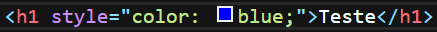
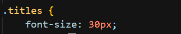
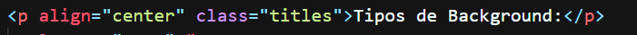
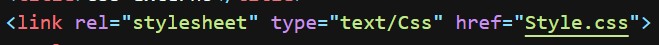
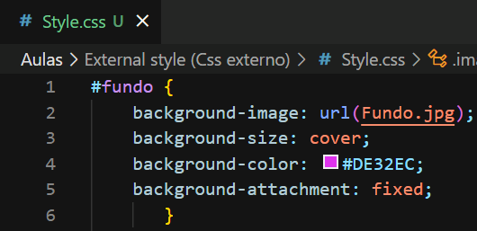

Inline Style |Internal Style | External Style | Código Css externo
Aula de CSS externo
- Essa aula é destinada ao uso de CSS externo, com um arquivo Html e Css se comunicando.
- Anteriormente, vimos 2 tipos de css:
- Inline Style

- Usado em cada linha e tag desejada dentro do HTML.
- Internal style Sheet

- Usado dentro do documento de HTML, aplicado a tag <Style> dentro de head.
- Aplicado seletores, class e ID, dentro de <Style>, definido a formatação e aplicado o ID nas estrutura da página.

- Entretanto, temos um mais importante e utilizado, o External Style Sheet, que é essencial para a formatação em sites com mais de uma página.
- Primeiro, é necessário criar um documento css, onde iremos realizar a formatação.
- Ao criar, deve-se definir o nome com ".css".
- Após isso, você aplicará a seguinte tag em head:

- Em "Href", você deve colocar o caminho do arquivo Css e seu nome por último, isso fará que haja a ligação entre o HTML e CSS.
- Agora, basta realizar a formatação normalmente no arquivo CSS e atribuir os seletores à estrutura do Html.

- Caso deseje, pode ver os outros arquivos de aprendizado, clicando no menu no inicio da tela.
- Para mais detalhes sobre Inline style e Internal style, acesse as aulas anteriores.
Gabriel Limone - Todos os direitos reservados©